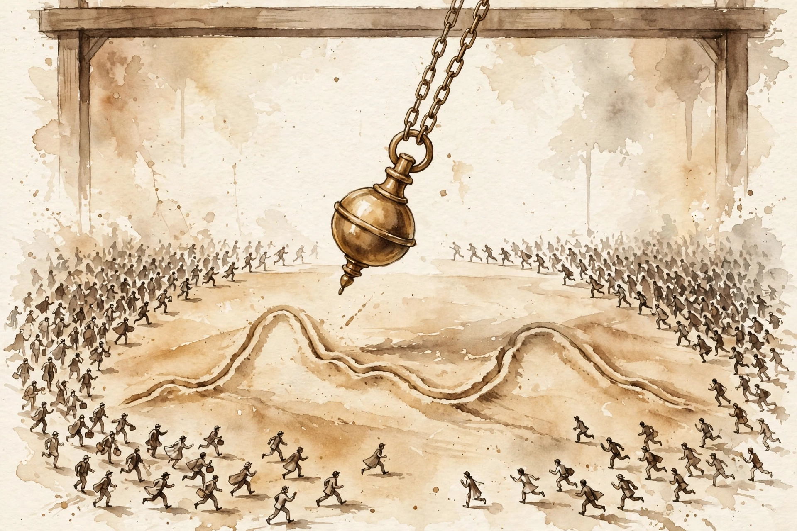

The Knowledge Project · Episode 10 · Companion
Howard Marks
Howard Marks on risk, cycles, and second-level thinking: what 2008 taught, why risk is not volatility, and how to get the odds on your side. This companion follows the full episode, chapter by chapter.

Illustration. The pendulum. Markets swing on emotion. The patient investor waits for the extremes. AI-generated watercolor made for this page.
Watch. The official episode video. Use the chapter menu above to jump to any section of this companion as you listen.
The Wisdom Index: every nugget in this companion
Part 1
September 2008
Lehman Brothers failed on September 15, 2008. Panic said the financial world might end. Marks reasoned it through: if the system melts down, no preparation helps, and most of the time the world does not end. So the only choice was to invest.
Oaktree put money to work at an average of six hundred fifty million dollars a week for the last fifteen weeks of 2008, ten billion in total. The world did not melt down. The courage came from decades of rehearsal in smaller crises and a partnership that never blamed anyone for a bad outcome.
Six hundred fifty million a week, ten billion total
Hover any bar for detail.
Source: episode transcript. Oaktree invested an average of 650 million a week for the last 15 weeks of 2008, ten billion total.
Nugget 1 · Courage
Decide before the crisis what you will do in it
What happened. Marks reasoned in advance that a meltdown cannot be prepared for, so the job was to invest through the panic.
Why it matters. Emotion tells investors to buy high and sell low. Logic, installed beforehand, is the only counterweight.
The principle. Write your crisis rules while calm. When fear arrives, execute the plan instead of improvising.
Part 2
What Risk Is
Marks rejects the academic definition of risk as volatility. Risk, he argues, is the probability of bad outcomes. And there are two of them: the probability of loss and the probability of gains you miss.
He borrows the cleanest definition from Elroy Dimson of the London Business School:
risk means more things can happen than will
Elroy Dimson, via Howard Marks, in the episode
Oaktree's motto follows from the definition:
if we avoid the losers the winners take care of themselves
Howard Marks, the Oaktree motto, in the episode
Nugget 2 · Risk
Count the missed gains as losses
What happened. Marks defines risk as the probability of bad outcomes, including the gains you miss by playing too safe.
Why it matters. Investors insure against loss and ignore the cost of caution. Both are bad outcomes.
The principle. Price the opportunity you skip with the same seriousness as the loss you fear.
Part 3
Second-Level Thinking
First-level thinking says this is a great company, buy the stock. Second-level thinking says it is a great company, but everyone knows it, so the optimism is already in the price and the stock should be sold. Outperformance demands thinking that is different and better.
Marks trained his son with one question. The boy would pitch a stock on good news, and Marks would answer: who does not know that. If everyone knows it, the price knows it too.
The price of admission is nerve. Dare to be different, dare to be wrong, and dare to look wrong, because even right ideas look wrong in the short run.
Nugget 3 · Thinking
Different is necessary, right is the hard part
What happened. Marks shows that consensus thinking produces consensus returns, so outperformance requires divergence plus correctness.
Why it matters. Most contrarians stop at being different. Different and wrong is just expensive.
The principle. Ask what the crowd believes, why it believes it, and where exactly it is wrong. Then dare to look foolish while you wait.
Part 4
Cycles
Cycles come from excesses and their corrections. In a recovery every company builds factories, hires workers, and stocks inventory at once. Together they build more than demand needs. The next year nobody builds, and that becomes the below-average year. Success sows the seeds of its own reversal.
Marks notes the American recovery was in its tenth year, the longest on record, but also the slowest since World War Two. Slow meant no excesses, and no excesses meant no correction was due. Every development, he insists, has two sides.
Part 5
Economic Reality
Governments do not make anything, Marks argues. They collect money and spend it. Everything else is redistribution, and every choice has a price the politicians prefer not to name.
His trade example is a barber shop. You pay twenty dollars for a haircut and run a trade deficit with the barber. He gets the money, you get the haircut, and nobody feels cheated. A national trade deficit works the same way: we get the cheap goods.
Tariffs, he adds, are paid by American consumers, not by China. Everything in Walmart gets more expensive. The three million jobs lost to China over fifteen years are real, but the hundred million Americans paying higher prices are real too.
Nugget 4 · Economics
Ask who pays, not who promises
What happened. Marks walks through tariffs, trade deficits, and tax policy asking one question: who actually pays.
Why it matters. Political promises describe benefits and hide costs. The costs still arrive, just unlabeled.
The principle. Translate every policy into payers and recipients. Then decide if the trade is worth it.
Part 6
Luck and Work
His most answered memo was called Getting Lucky, on the role of luck in success. He lists the ways he was lucky, starting with the brain he was born with, and quotes Buffett's ovarian lottery. Luck is real, unfair, and worth gratitude instead of denial.
On work and automation he is blunt. American manufacturing output doubled in forty years while employment fell from nineteen million to twelve. Output per worker tripled. The country lost about twenty-four million jobs to productivity and three million to China. The problem is the machines, not the foreigners.
Twenty-four million jobs to productivity, three million to China
Hover any bar for detail.
Source: episode transcript. Marks cites 24 million jobs lost to productivity versus 3 million to China.
Self-driving cars sharpen the point. If cars drive themselves and get shared like city bicycles, the country needs a twelfth as many cars. He cannot picture where the drivers, mechanics, and insurers go next, and he admits it.
Part 7
Money, Kids, and Being Wrong
Marks taught his children that money is finite. They got credit card bills and monthly budgets, not blank checks. Let children make non-lethal choices, he says, because a first mistake at five teaches what a first mistake at thirty-five crushes.
He closes by reading his favorite paragraph on being wrong. The future is not ours to know. Being wrong is inevitable and normal, not a tragedy, not a failing. No investor bats a thousand, so judge the process, never just the outcome.
Takeaways
- Write crisis rules while calm. Execute them when fear arrives.
- Define risk as the probability of bad outcomes, including the gains you miss.
- Think different and be right. Dare to look wrong while you wait.
- Being wrong is normal. Judge the process, not the outcome.